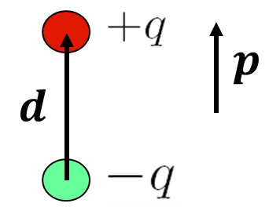
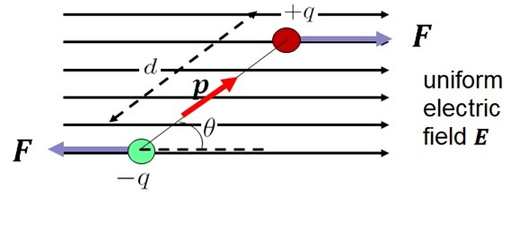
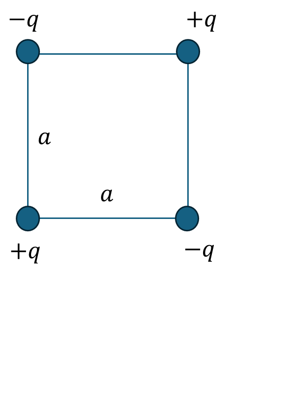

3 Work and Energy in Electrostatics
Recommended reading: Griffiths Section 2.4
3.1 Work done to move a charge
3.2 Energy of a point charge distribution
3.3 Energy of a continuous charge distribution
Work and Energy in Electrostatics The work done to assemble a system of charges is related to the potential energy stored in the system. For point charges, the electrostatic potential energy \(U\) is given by:
Energy Density of the Electric Field
The energy density uuu of the electric field is: u=12ϵ0E2u = _0 E^2u=21ϵ0E2 where ϵ0_0ϵ0 is the permittivity of free space. The total electrostatic energy stored in a volume VVV is: U=12ϵ0∫VE2 d3rU = _0 _V E^2 , d^3rU=21ϵ0∫VE2d3r
3.4 Work and the electric dipole
3.4.1 Electric dipole field
Recommended reading: Tipler & Mosca 21-4 An electric dipole is a combination of a positive and negative charge, equal in magnitude, a small distance from each other. A visual representation of the electric field of a dipole is shown below:

The vector field for an electric dipole can be calculated by summing the vector fields due to the two charges.
Let’s consider the dipole in the diagram below. The dipole is oriented along the \(y\)-axis, and we define an arbitrary point \(P\) on the \(x\)-axis:
For dipoles, we define a quantity known as the electric dipole moment, given by $ = q $. The electric dipole moment is the product of the charge \(q\) (pay attention here! This is the charge on

The field produced by the dipole at point \(P\) on the \(x\)-axis is given by: \[ \mathrm{\mathbf{E}}= \frac{1}{4\pi \epsilon_0} \frac{qd}{ \left( x^2 \left( \frac{d}{2} \right)^2 \right)^{\frac{3}{2}} } \]
Does this look familiar? If you attempted the
So the field is very similar to that of a point charge, however it drops off even faster with distance. If we look at the field lines of the dipole, we can see how this happens - instead of spreading straight out from the charges, the field lines bend towards the axis of the dipole, therefore diverging faster than the point charge case.
3.4.2 Energy of a dipole in an external electric field
Now, back to the topic at hand: work and energy.
Consider a dipole that is placed within a uniform electric field. The force on each charge has magnitude \(qE\), but since these forces are in opposite directions there is no net force on the dipole. There is however a torque about the centre of the dipole. See the diagram below to get a feel for this.

The torque about the centre of the dipole is τ=2Fd2sinθ=qEdsinθ=|p|Esinθ(2.9)(2.9)𝜏=2𝐹𝑑2sin⁡𝜃=𝑞𝐸𝑑sin⁡𝜃=|𝑝|𝐸sin⁡𝜃 The direction of the torque is perpendicular to the page, so it can be represented in vector form as τ=p×E𝜏=𝑝×𝐸. The torque will cause the dipole to rotate and align itself with the electric field.
We can use the work done by the field to determine what is the minimum energy configuration (although it should be fairly obvious). The work done is the integral of the product of the torque and the angle turned through: W=∫θθ0|τ|dθ=∫θθ0pEsinθdθ=[−pEcosθ]θθ0(2.10)(2.10)ğ‘Š=∫ğœƒ0ğœƒ|𝜏|dğœƒ=∫ğœƒ0ğœƒğ‘ğ¸sin⁡𝜃dğœƒ=[−ğ‘ğ¸cos⁡𝜃]ğœƒ0𜃠The change in potential energy is ΔU=WΔğ‘ˆ=ğ‘Š, hence:ΔU=U(θ0)−U(θ)=pE(cosθ0−cosθ)(2.11)(2.11)Δğ‘ˆ=ğ‘ˆ(ğœƒ0)−ğ‘ˆ(ğœƒ)=ğ‘ğ¸(cosâ¡â¡ğœƒ0−ğ‘ğ‘œğ‘ ğœƒ) The zero of potential energy U(θ0)ğ‘ˆ(ğœƒ0) can be chosen to be anywhere, so we can choose it to correspond to θ0=90∘ğœƒ0=90∘ in which case U=−pEcosθğ‘ˆ=−ğ‘ğ¸cos⁡𝜃. This energy can be expressed in vector form as U=−pâ‹…Eğ‘ˆ=−ğ‘â‹…ğ¸. Not surprisingly, the energy is a minimum when the dipole is aligned with the field at which point the torque will be zero.
3.5 Post-lecture problem
As discussed in the lecture, consider a collection of 3 charges that form 3 sides of a square, as shown:

In the lecture, we calculated the amount of work it takes to bring in a 4th charge \(+q\) from far away and place it in the 4th corner of the square.
Q: Your task is to calculate the total work it takes to assemble all 4 charges into the square configuration.